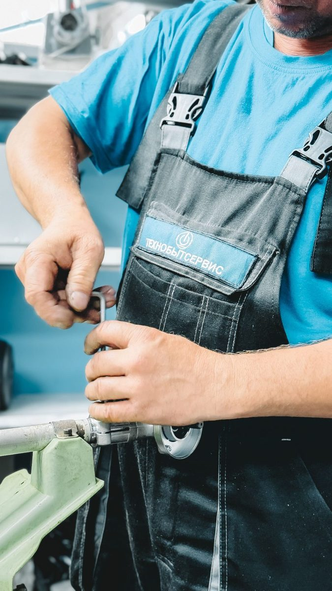

Toilet, Bathtub & Sink Overflow Water Cleanup in Plano, TX
An overflowing toilet or a tub left running can soak the floor, the subfloor and the ceiling below in minutes. Blackland Restoration Co. handles toilet overflow cleanup in Plano TX with fast extraction, sanitization and drying under vanities, tile and baseboards. Call now and a crew is dispatched immediately.
- ✓ Toilet overflows
- ✓ Tub & sink floods
- ✓ Upstairs bathroom leaks
Call Now: 24/7 Bathroom Flood Cleanup | Contact Us
Is Toilet Overflow Water Dangerous?
It can be. Clean tank water is low risk, but a bowl overflow with waste is Category 3 black water. In Plano bathrooms, contaminated flooring and baseboards need professional removal and disinfection.
Stop the Water First
- Toilet: turn the oval valve behind the toilet (the angle stop) clockwise. If it's broken or won't turn, shut off your main.
- Tub or sink: turn off the faucet and pull the drain plug.
- Supply line broke: shut off the main water valve.
- Keep kids and pets off wet floors, especially if the water came from the toilet bowl.
Then call us. We'll take it from there.
Clean Water vs. Contaminated Toilet Water
What's in the water decides how we clean it up.
| Source | Category | What It Means |
|---|---|---|
| Tank or supply line leak | Category 1 (clean) | Extract and dry; most materials can be saved |
| Bowl overflow with urine only | Category 2 (gray) | Extract, antimicrobial treatment, dry |
| Bowl overflow with feces, or sewer backup | Category 3 (black) | Remove porous materials, full disinfection |
| Tub or sink overflow | Category 1 at first | Can become gray if left sitting |
If waste came up through the drain or the toilet backed up from the sewer line, see our sewage cleanup page.
Upstairs Bathroom Floods That Leak Into Downstairs Rooms
Upstairs bathroom flood water extraction in Plano is one of our most common calls. Water spreads across tile, finds the gap at the toilet base or the tub edge, and soaks into the subfloor and the ceiling below.
When an upstairs toilet ran all night and water is now coming through the downstairs ceiling, we:
- Extract water from the bathroom floor and any carpeted rooms next to it
- Check and drain the ceiling below
- Remove wet ceiling drywall and insulation as needed
- Dry the subfloor and the joist space between floors
- Sanitize based on the water category
Drying Under Vanities, Tile and Baseboards
Bathrooms are full of places where water hides:
- Under the vanity on the cabinet base and subfloor
- Behind the toilet and around the flange
- Under tile through grout lines and the setting bed
- Behind baseboards in hallways and bedrooms next door
- Under the tub where the floor meets the framing
We remove vanity toe-kicks to dry underneath, use meters to find trapped moisture and dry with targeted air and dehumidification.

When the Bathtub Overflows Into Bedroom Carpet
Kids left the bathtub running and flooded the master bedroom carpet? It happens more than you'd think. If the water was clean and we get there quickly, carpet can often be dried and saved, while the pad is usually replaced.
Slow SeepsPreventing Subfloor Rot Around Toilets and Shower Pans
Not every bathroom leak is sudden. Some are slow seeps that soak the subfloor over months:
- A broken wax ring under the toilet lets water seep with every flush
- A failed shower pan lets water into the subfloor beneath the shower
- A loose supply line drips behind the toilet
Signs include a soft or spongy floor near the toilet, loose tile, stains on the ceiling below, or a musty smell. If a broken toilet wax ring has rotted the subfloor, we remove the damaged section, dry the framing and coordinate replacement.
Common Causes of Bathroom Overflows
- Failed toilet fill valves and flappers
- Burst braided supply lines
- A vanity angle stop that broke off and flooded the house
- Clogged toilets that overflowed
- Tubs and sinks left running
- Leaking shower pans and failed grout
Sanitization and Odor Removal
Every bathroom loss gets antimicrobial treatment on affected surfaces. If the water was contaminated, we use stronger disinfectants and remove porous materials. Odor control is part of the job, not an extra.
Bathroom Overflow FAQs
Can I clean up a toilet overflow myself? +
If it was clean tank water and only reached the tile, you can mop and dry it. If it soaked into carpet, baseboards, the subfloor or the ceiling below, or if waste was involved, professional cleanup is the safer choice.
Does insurance cover a toilet overflow? +
A sudden overflow or supply line break is often covered. A slow wax ring leak over months may not be. We document everything for your claim.
How long does bathroom water damage take to dry? +
Typically three to five days. Subfloors and ceilings below can take a bit longer.
Do I need to remove my bathroom tile? +
Not always. If water is trapped under tile, we'll test first and remove only what's needed.
Bathroom Flooded in Plano? Call Now
Overflow water spreads under floors and into ceilings fast. Call Blackland Restoration Co. now and we'll dispatch a crew immediately to extract, sanitize and dry.
Water in Your Plano Home Right Now?
Every hour matters with water damage. Call now, talk to a real person, and we'll dispatch a crew immediately to stop the water, start drying, and protect your home and your claim.
☎ Call (214) 555-0134Don't Wait on Water Damage
- ✓ Live answer 24/7, every day of the year
- ✓ Crew dispatched immediately
- ✓ On-site assessment
- ✓ Insurance-ready documentation